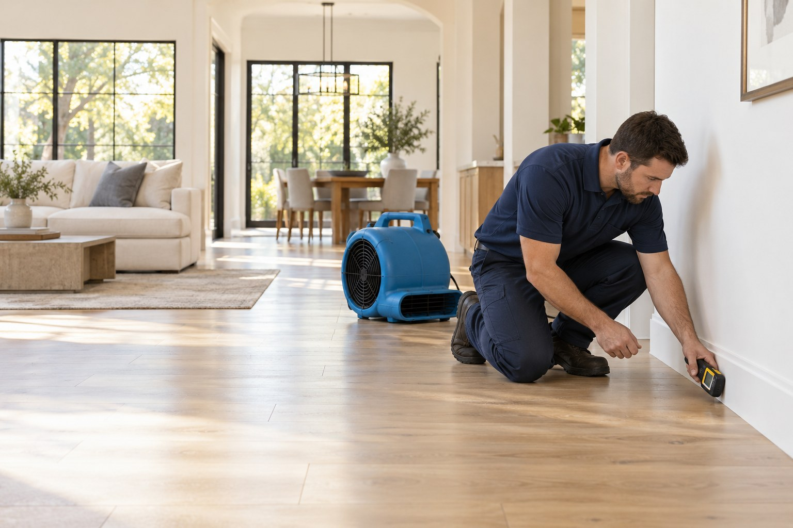

Understand the damage
Start with the water source, affected rooms, and immediate access or safety concerns.
Water removal, structural drying, and specialized cleanup for Grapevine homes and businesses. Practical help, from the first concern to the next step.
Visit our main website
A focused approach to getting your space back.
A leaking appliance and outdoor flooding need different cleanup plans. Find the service that matches what happened.
Get a clear plan when water damage cannot wait.
Explore service02Remove standing water. Find what it left behind.
Explore service03Dry the materials you cannot judge by touch.
Explore service04A cleanup plan that accounts for contaminated water.
Explore service05Address indoor water damage after the storm passes.
Explore service06Stop the supply. Assess the spread.
Explore service07Keep contaminated water contained and people away.
Explore service08A careful approach to water in below-grade spaces.
Explore service09Find the moisture beyond the appliance.
Explore serviceStart with the water source, affected rooms, and immediate access or safety concerns.
Check the spread and identify what can be cleaned, dried, or needs removal.
Use the condition of the materials and moisture readings to guide the next step.
From homes near Historic Downtown to properties around Grapevine Lake and businesses along the Industrial Boulevard corridor, the right plan starts with your building and the source of water.
A nearby landmark does not establish a property’s flood risk. Check the address using official floodplain resources when you need drainage or flood-risk information.
The City of Grapevine provides stormwater and floodplain information. These resources help with questions about runoff and mapped floodplains; they do not replace a property assessment.
Grapevine floodplain resourcesIf it is safe, stop the water source and avoid the wet area if electricity or contamination may be involved. Take photos from a safe location and call with the affected rooms and source.
Coverage depends on your policy and the cause of damage. Contact your insurer, keep photos and receipts, and ask what documentation is required. We do not guarantee coverage.
The source, affected materials, contamination, and extent of moisture influence the scope. Call to discuss the damage and the next step toward an assessment.
Tell us what happened, where the water is, and whether the source is still active.